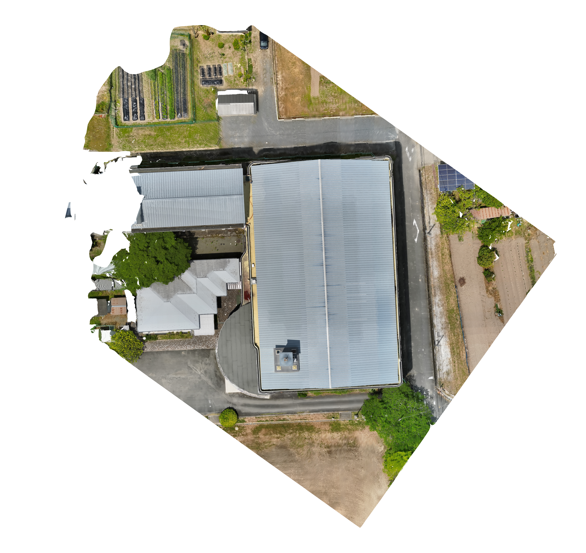

SKYSCOPE / SCOPEC · DRONE IMAGING
Making aerial inspection data explorable
I built browser tools for exploring reconstructed buildings and reviewing aligned RGB and thermal drone imagery.
From raw outputs to a usable view
I developed the SkyScope browser viewer for importing and inspecting 3D models, aligning image layers, and comparing RGB and thermal views across capture times. I also built a drone orthomosaic review tool: users can swipe between aligned RGB and thermal maps, open matching closeups, mark suspected defects, record severity and notes, and export annotations as GeoJSON.
The wider inspection concept connected 3D pre-inspection, flight planning, infrared capture, analysis, and reporting. The reconstruction pipeline and business plan were team efforts; both browser tools and their revisions are directly traceable to my commits.

Roof detail from the same orthomosaic
Review RGB and thermal aerial imagery
This recorded demo shows the orthomosaic review tool I built for comparing aligned aerial views and recording inspection observations.
From an aerial route to a usable view
The overhead route concept gives context for how drone imagery is collected before viewing the inspection and reconstruction results.
Explore a building reconstruction
Drag to rotate, scroll or pinch to zoom. This retained thermal-color reconstruction shows the building and its surroundings in 3D.
Thermal-color building reconstruction · drag to rotate
What this represents
This is an interactive 3D scene reconstruction with thermal visualization: a foundation for spatial inspection and a digital-twin prototype. It is not a predictive AI world model; no learned dynamics or future-state simulation are shown here.
The interactive scene is a Gaussian-splat reconstruction from a retained thermal project capture. It shows visualized inspection data, not a measured or validated digital twin. Original geometry and imagery are preserved separately.